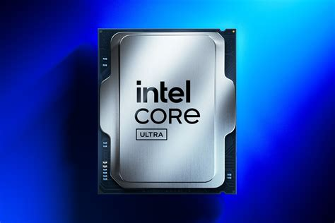
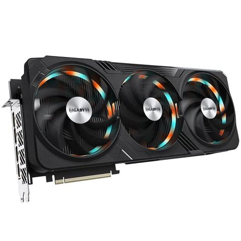
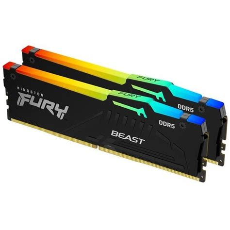

Procesor (CPU)
Procesor obrađuje naredbe i podatke te je najvažniji dio računala.
Saznajte čemu služe osnovne komponente računala i kako odabrati prave dijelove.
Pogledaj usluge
Procesor obrađuje naredbe i podatke te je najvažniji dio računala.

Grafička kartica obrađuje sliku i prikazuje grafiku na monitoru.

RAM privremeno čuva podatke koje računalo trenutno koristi.